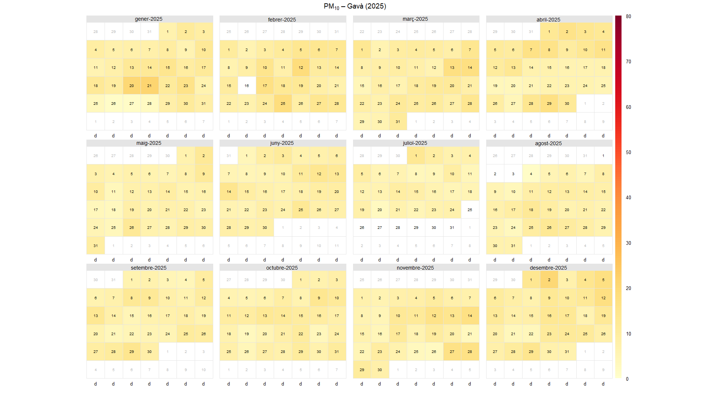

Air pollution, meteorological conditions and respitaroryinfectionsin Baix Llobregat a 14-years septentional analysis
The objectives of this research project are:
- David & Marc are studying all data from Gava that is a city located in Baix Llobregat county. In this county we are using data from Air POllution Prevention Ant Monitoring Network (XPVCA in catalan). corresponding to hourly data of air pollution fiom years 1991 to 2025. Data included: Nitrogen dioxide (NO), nitrogen dioxide (NO2), nitrogen oxides (NOX), ozone (O3), solar iridance.
- Respiratory infection data are collected from SIVIC server using data from reguion 75, that is Barcelona metropolitant south reguion 201 is theidentificor of the Primary care centre from Gavà Meteorologuical data is avaliable from Meteocat (Meteorologuical data server of Catalonia) , so we chose the nearest meteorological station that is Prat de Llobregat. The data structure is based on semi-hourly data that is, data every 30 minutes from 2009. Data included: temperature, relative humidity, presure, wind direction, wind speed, solar irradiance.
- In this calender, you acn watch the
